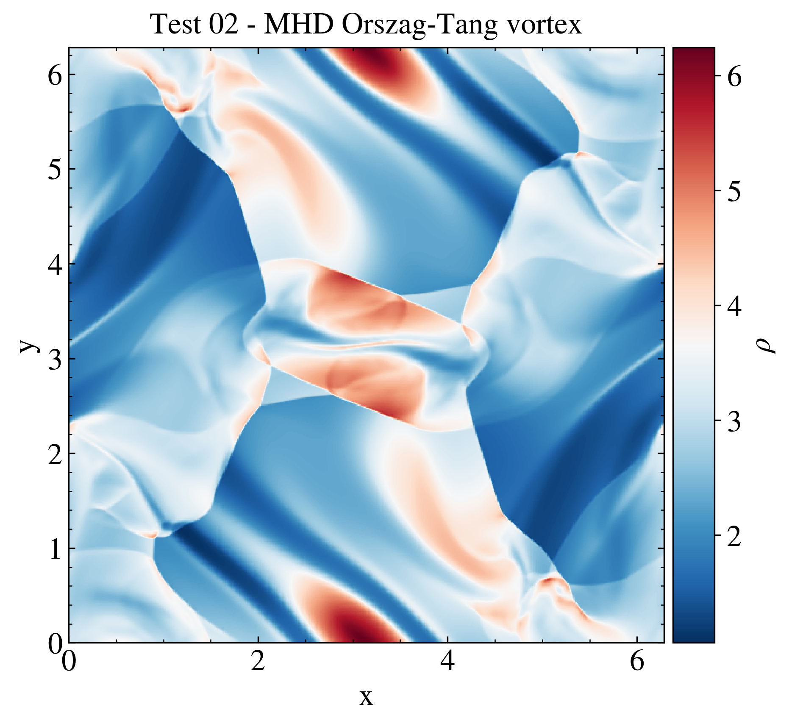

MHD OT¶
The Orszag-Tang test is a well-known problem for testing the formation of MHD shocks and the shock-shock interactions in a 2D dominion.
The figure displays the density of the magnetic fluid at the time t = 3.14.
""" Classical MHD Orszag-Tang test This test shows how to display a 2D quantity from a test problem in a single plot. The package "os" is loaded to create the path to the directory $PLUTO_DIR/Test_problems/MHD/Orszag_Tang, where the the test problem is located (see section 0.3 of the userguide to run the shock-tube problem). In the script the spatial dependence of the density is displayed, with a colorbar positioned on the right side of the figure. The image is then saved and shown on screen. Authors: D. Crocco G. Mattia Date: 23/02/2024 """ # Loading the relevant packages import pyPLUTO as pp import os # Creating the path for the data directory plutodir = os.environ['PLUTO_DIR'] wdir = plutodir+'/Test_Problems/MHD/Orszag_Tang' # Loading the data into a pload object D. D = pp.Load(path = wdir, datatype = 'vtk') # Creating the Image class I = pp.Image(figsize = [7,6]) # Plotting the data I.display(D.rho, x1 = D.x1r, x2 = D.x2r, title = r'Density $\rho$ [Orszag Tang test]', xtitle = 'x', ytitle = 'y', cpos = 'right', cmap = 'RdBu_r') # Saving the image pp.savefig('test02_ot.png') pp.show()
{kind=link}